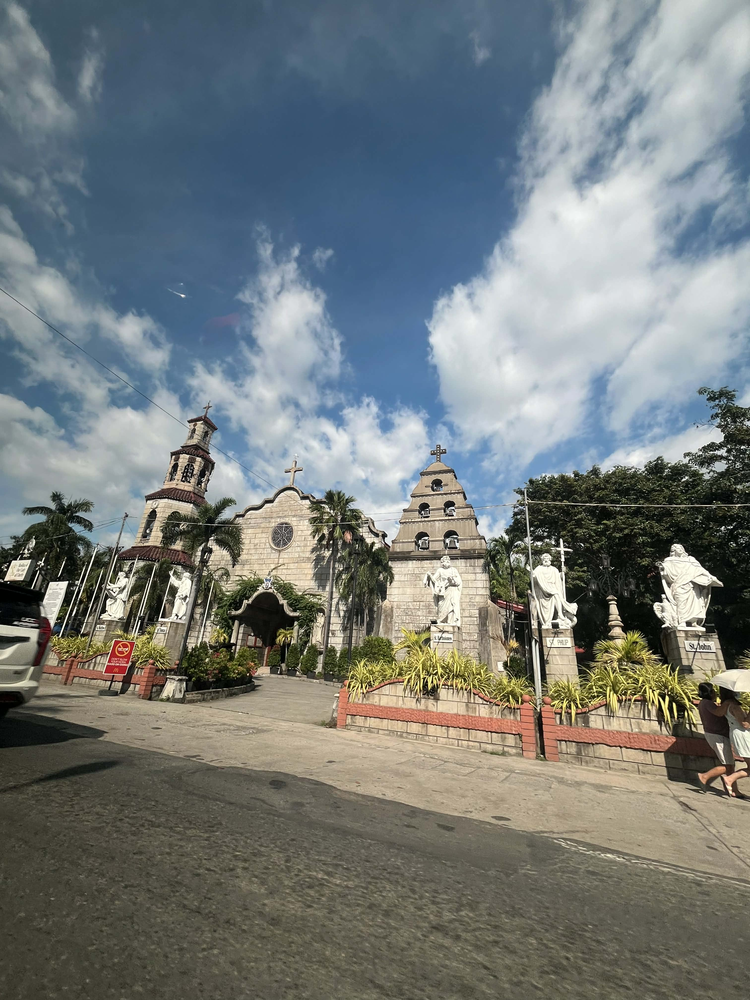
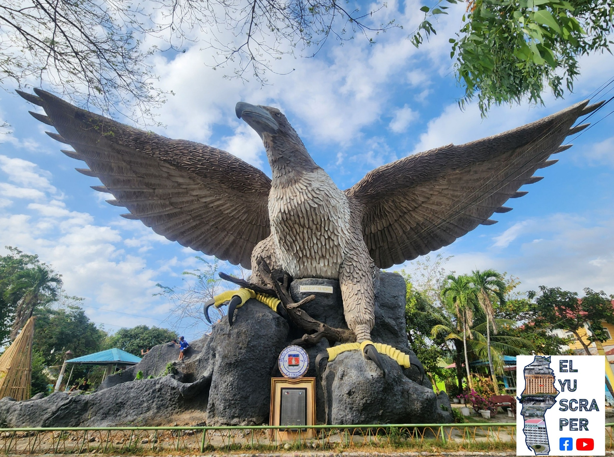

About Agoo
History
Agoo, founded in 1578, is the oldest town in La Union, serving as a vital Spanish mission center and pre-colonial trading port. Originally part of Pangasinan, it became a key part of La Union in 1850. Known as the "pine-like trees" town, Agoo serves as a regional religious center, home to the Basilica Minore of Our Lady of Charity.
Cultural Heritage
Agoo, La Union, serves as the province's oldest town and was a flourishing international port long before Spanish arrival. Known as "Puerto de Japon" due to its early Japanese settlement, it acted as a vital gateway for trading Cordillera gold with Chinese and Japanese merchants. In 1578, the Spanish formally established the town, naming it after the agoo trees that lined its riverbanks. Today, the town’s cultural identity is anchored by the Basilica Minore of Our Lady of Charity and the Museo de Iloko, while the Dinengdeng Festival celebrates Ilocano traditions.
Mission
The mission of Agoo is to provide sustainable socio-economic, health, and environmental services to enhance the quality of life for its residents through transparent and effective leadership.
Vision
Agoo envisions becoming one of the premier towns of the Philippines by 2030, serving as a leading center for commerce, education, and tourism within La Union.